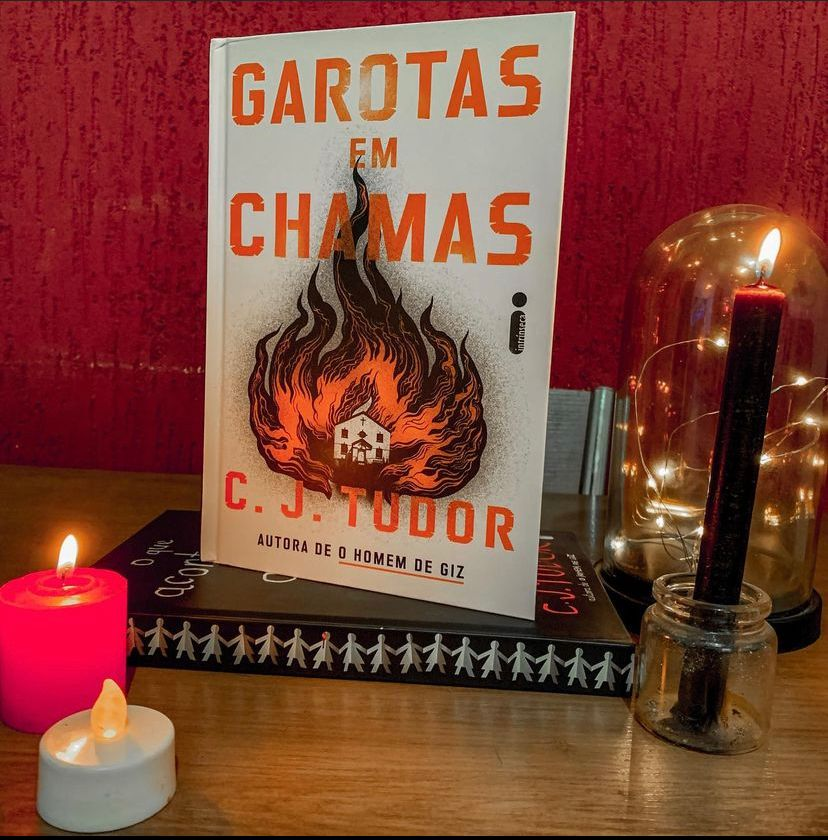

Garotas em Chamas
(C.J Tudor - Intrínseca)
⭐⭐⭐⭐⭐
Reverenda Brooks é transferida para o vilarejo de Chapel Croft após um incidente na sua antiga congregação e também após a morte do religioso da pequena cidade. Brooks e sua filha adolescente Flo saem da cidade grande e partem para a nova cidade, a contra gosto da jovem que já estava acostumada a antiga vida. Chegando lá elas vão perceber que nem tudo é o que parece e as coisas podem ser bem obscuras e misteriosas. Garotas que morreram queimadas como mártires, desaparecimento de adolescentes, kit exorcismo e a morte do antigo paróco são os mistérios que cercam a cidadezinha.
A autora C.J Tudor tem uma habilidade ímpar em contar histórias cercada de mistérios sobrenaturais sem que nada pareça forçado. O livro vai tratar de assuntos muito pertinentes como a confiança entre mãe e filha, a relação dos fiéis com seus líderes religiosos e fanatismo religioso, assuntos que considero bem pertinente no atual cenário.
A narrativa é envolvente e a autora conseguiu explicar e fechar todo final de uma forma maravilhosa e plausível. Tudo ficou bem amarradinho.
Se você gosta de suspense, mistério e uma pontinha de elementos sobrenaturais provavelmente vai adorar o livro. A autora é descritiva mas, posso dizer que isso contribui pra obra de forma incrível, da pra sentir durante a leitura o clima da cidade, os lugares e toda energia misteriosa da trama!
“Não há nada escondido que não venha a ser descoberto”. ✝️